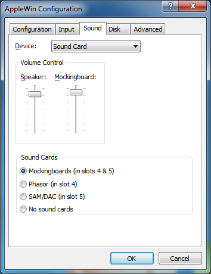

Sound Settings
Sound:
This option allows you to choose how sound is output for the
system. Your choices are:
- Disabled
- Sound Card (recommended)
Volume Control:
These slider controls allow you to control the sound
levels of the built-in Apple //e speaker and/or an optional
Mockingboard or Phasor speaker.
Sound card selection:
These options allow you to select the type of Apple II sound card in either slot 4 and/or slot 5.
Available sound cards are:
- Mockingboard C
- Phasor
- SAM (Software Automatic Mouth) - an 8-bit DAC card